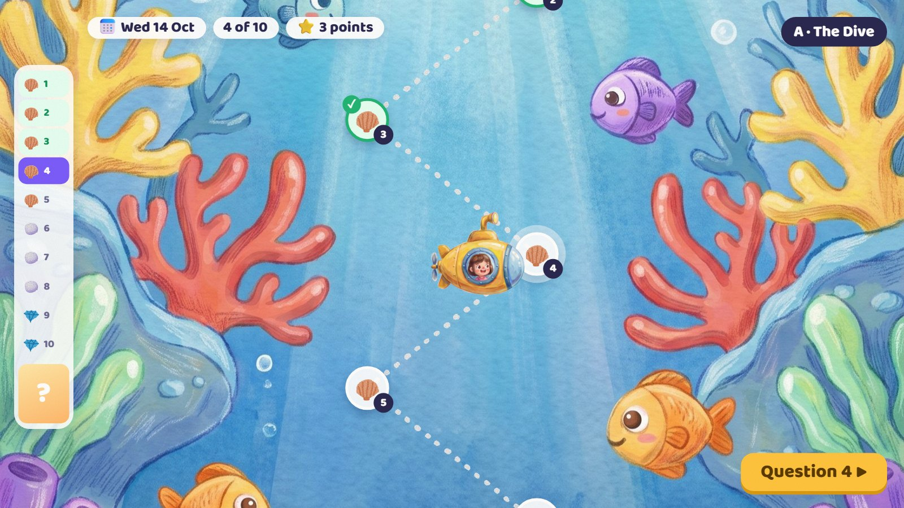
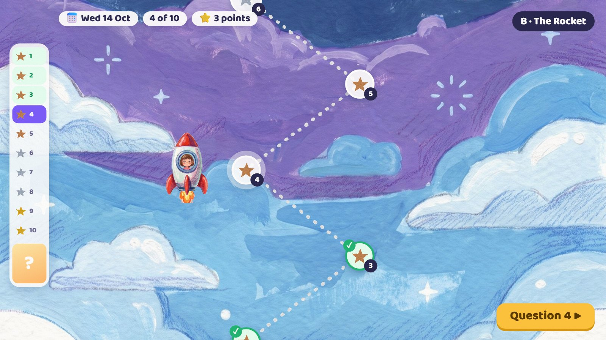
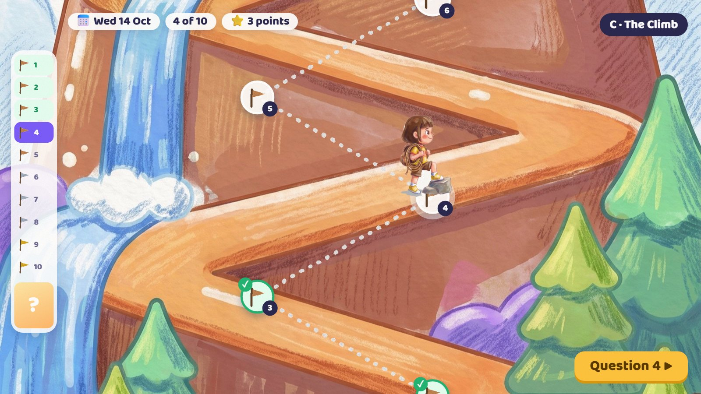
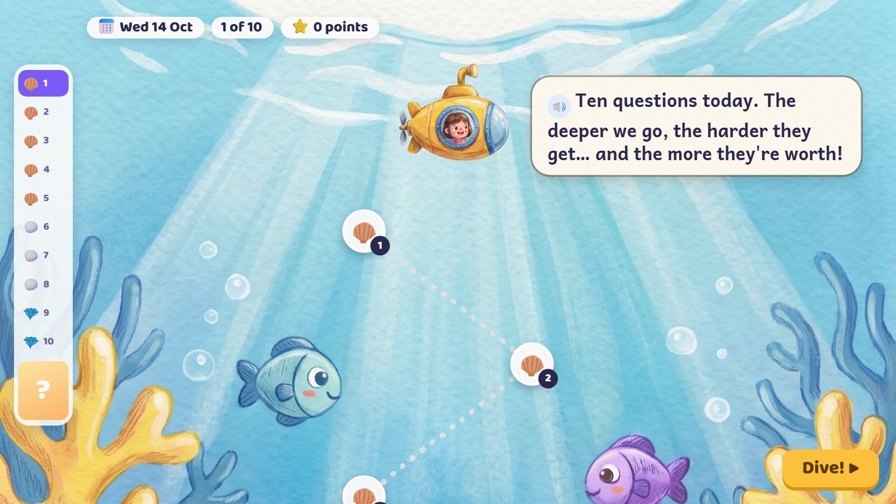
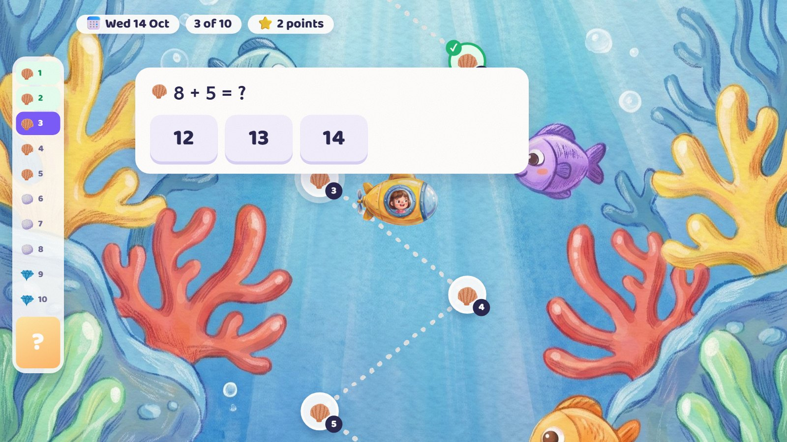
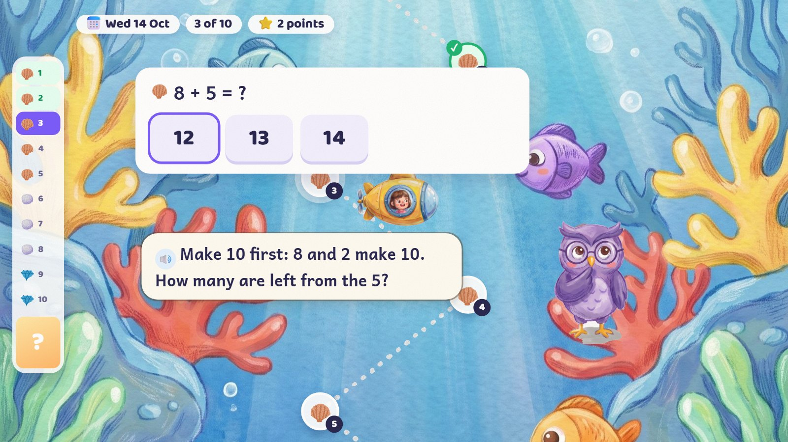
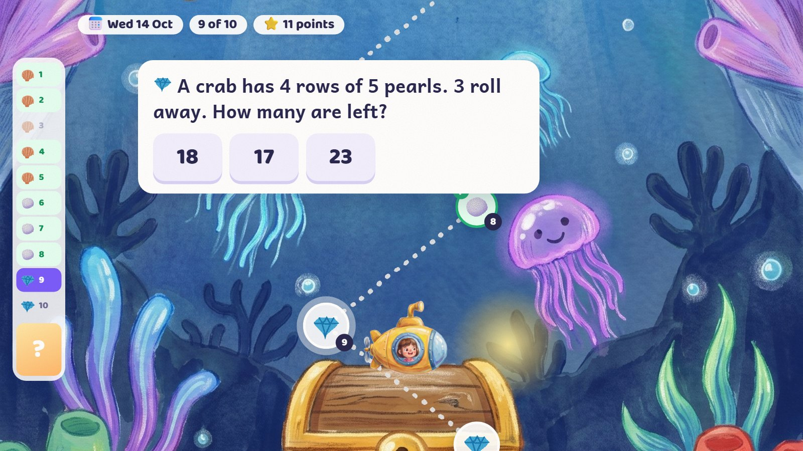
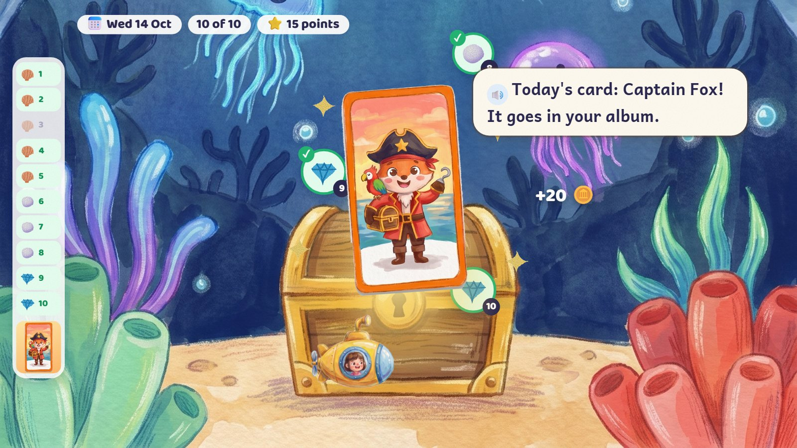
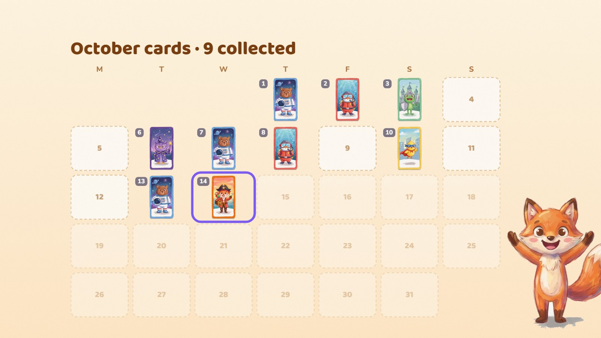

The last stop of every day's road: ten questions from what the child has already learned, easier to harder, the later ones worth more, and a card to collect each day. Three looks were drawn. My pick is the Dive: going deeper reads as "harder" at once, it looks nothing like the road on the home screen, and one tall sea picture works for every age.
Each is shown at question 4: three done, 3 points. The gauge on the left shows all ten stops and today's card at the end.




The submarine waits at the surface; ten stops go down; the card in the chest is a mystery. On the left, a gauge shows all ten stops and the card at the end.
🔊 Ten questions today. The deeper we go, the harder they get… and the more they're worth!
Few words on screen: the date, how far, the points, one button.

The question sits over the water, big and still. The submarine waits beside it.
Questions come from what the child has learned, mixed from about three parts of maths.

The child chose 12. It stays marked. A tip, then a second try.
🔊 Make 10 first: 8 and 2 make 10. How many are left from the 5?
Two tries for every age, but only a first try earns the stop's points. After a second miss: the worked steps and a fresh twin, and the dive goes on.

Stop 9 is worth 3 points: darker water, glowing jellyfish, the submarine's lamp on. Harder: two steps.
Stop 3's shell stayed closed on the gauge: no point, nothing taken away.

Stop 10 done: the chest opens and today's card rises out of it. +20 coins; 15 points of 17.
🔊 Today's card: Captain Fox! It goes in your album.
Finishing the ten earns the card, whatever the score: points and stars show how well, not whether.

This month's cards on their dates. A missed day is a calm empty slot.
No streak to lose. An earlier day's dive can still be done for its card (no extra coins).
| Rule | |
|---|---|
| Where it sits | The last stop of the day's road, after the three activities. It can also be done later in the day. |
| Ten stops | Easier to harder. Stops 1–5 are worth 1 point (shells), 6–8 are worth 2 (pearls), 9–10 are worth 3 (gems): 17 at most. Untimed. |
| Which questions | Only skills the child has learned, from about three parts of maths (for example numbers, shapes, measures). Harder means less help or two steps, not suddenly bigger numbers. |
| Tries | Two for every age. Only the first try earns points. After a second miss: the worked steps, then a fresh twin. Every question finished moves the dive on. |
| Stars | 10 of 10 first tries = 3 stars; 8–9 = 2; 6–7 = 1; fewer = a tick for finishing. |
| The card | Finishing the ten earns the day's card for the month's album, plus 20 coins. |
| Missed days | An empty slot, nothing lost, no streak message. Older dives can still be done for their cards (no extra coins). |
| Ages 3–5 | Two halves of five, at different times of the day, with five dots for each half; both halves earn the card. |
| Harder levels | Two days at 14 of 17 or more can suggest a harder level of what is already learned. |